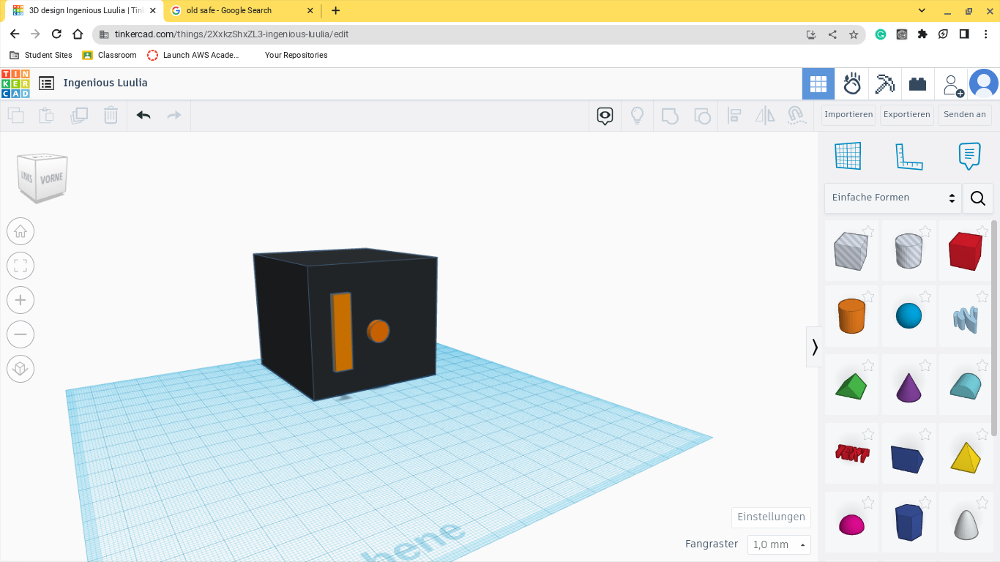
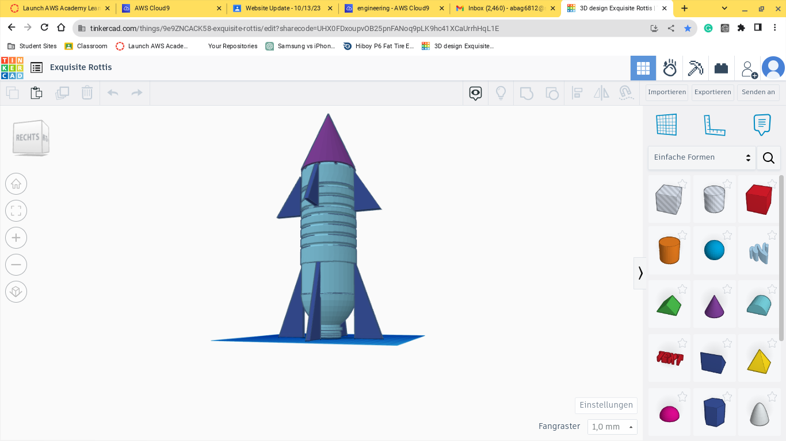

8/25/23 - this week in mr.poole's class we lerend the engineering prosses. on tersday we did the weekle challenge and we lost. this week was somtimes boring and a lot of the times fun. this weekend we are going to the lake with the boats. on sunday we are going fithing. pulled pork recipe
9/1/23 - This week i lerned the proper safty proseger. I started to desine my project. This week for the calinge we had to desin somthing in cad.

9/8/23 - this week was vary fun and we had back to school night. we started a rube goldberg machine we used a lever,pully and a ramp. the most calinging part will be lonching a ball with a lever.

9/28/23 this week we dissected a pc i found out what a moter bord looks like and how it works. i lerend the compyters are vary conmplocated machein. this weekend im geting my dirtbike redy for next weekend.
10/6/23 this week we did bio enganering we made a hand with cardbord and string to pick up a botol. i wasant ther for the picking up of the botol but i hered itr worked flowlesly.
10/13/23this week we lerend about aerospace engineering the 4 components are lift, drage,trust and wight. i like this class becous it gives us a lot of freedome.the link for the bom href="https://docs.google.com/spreadsheets/d/1lGscCIdbzAa7pHJVnhujk2GiB7v-HJt29ziQC7IV3EA/edit#gid=0">BOM

10/20/23 this week was vary fun. we bilt a botal rocket and we tested it it faild unforchnetly. there were a lot of cool looking rocots but most didint work.
10/26/23 this week we made water filters. it was a fun experament and it worked pritey well. we did it for bio enggneiing we lerned how we use machens to recicel water.
10/31/23
11/3/23 this week we lerned eletcral engnering we used thinker cad to disine a ceicat.
11/9/2
1/9/24